La anemia por deficiencia de hierro se presenta cuando las reservas corporales de hierro bajan. Esto puede ocurrir debido a que:
El sangrado puede causar pérdida de hierro. Las causas comunes de sangrado son:
Es posible que el cuerpo no absorba suficiente hierro de la dieta debido a:
Es posible que no se obtenga suficiente hierro en la dieta:
La falta de vitamina B12 puede deberse a factores alimentarios, como:
Ciertos problemas de salud pueden dificultarle a su cuerpo la absorción de suficiente vitamina B12. Estos incluyen:
Las causas de este tipo de anemia pueden incluir:
La anemia por enfermedad crónica es una forma común de anemia. Algunas afecciones que pueden llevar a esta anemia son:
Hay muchas causas posibles de la anemia hemolítica. Los glóbulos rojos pueden ser destruidos debido a:
La anemia aplásica puede ser causada por:
La anemia megaloblástica generalmente es causada por deficiencia de ácido fólico o de vitamina B12.
Otras causas menos comunes son:
Las causas más comunes de anemia perniciosa abarcan:
Usted es más propenso a presentar esta enfermedad si:
Ciertas enfermedades también pueden elevar el riesgo, entre ellas:
La anemia perniciosa también se puede presentar después de una cirugía de derivación gástrica.
La enfermedad depranocítica es causada por un tipo anormal de hemoglobina llamada hemoglobina S:
La enfermedad drepanocítica se hereda de ambos padres. Si usted hereda el gen de los drepanocitos de solo uno de los padres, tendrá el rasgo depranocítico. Las personas con este rasgo no tienen los síntomas de la enfermedad drepanocítica.
Este tipo de afección es mucho más común en personas de ascendencia africana o mediterránea. También se observa en personas de Centro y Suramérica, el Caribe y el Medio Oriente.
La hemoglobina se compone de dos proteínas:
La talasemia ocurre cuando hay un defecto en un gen que ayuda a controlar la producción de una de estas proteínas.
Existen dos tipos principales de talasemia:
Las talasemias alfa ocurren casi siempre con mayor frecuencia en personas del sudeste asiático, Medio Oriente, China y en aquellas de ascendencia africana.
Las talasemias beta ocurren en personas de origen mediterráneo. En menor grado, los chinos, otros asiáticos y afroamericanos pueden resultar afectados.
Hay muchas formas de talasemia y cada tipo tiene muchos subtipos diferentes. Tanto la talasemia alfa como la beta abarcan las siguientes dos formas:
Es necesario heredar el gen defectuoso de ambos padres para padecer la talasemia mayor.
La talasemia menor se presenta si uno recibe el gen defectuoso de solo uno de los padres. Las personas con esta forma del trastorno son portadores de la enfermedad y por lo regular no tienen síntomas.
La talasemia beta mayor también se denomina anemia de Cooley.
Los factores de riesgo de la talasemia abarcan:
Definición: La hepcidina es el regulador clave de la homeostasis del hierro, se produce en el hígado y es excretada en la orina. [42]
Proceso: En los seres humanos, la disrupción del gen de la hepcidina produce la forma más severa de sobrecarga del hierro: la hemocromatosis juvenil, mientras que la sobreproducción de hepcidina genera una anemia que se soluciona después del trasplante hepático. [43]
Hasta hoy no existe una clasificación en grados de severidad de la anemia durante la enfermedad crítica.
La prevalencia e incidencia de anemia en los pacientes críticos tiene que ser contextualizada en las prácticas transfusionales usadas. [44]
Los pacientes críticos presentan hipovolemia intravascular requeriendo reanimación con soluciones cristaloides o coloides. Esta reanimación produce un estado de hemodilución, que conlleva una disminución en la concentración de hemoglobina, lo cual no estima de fiable la masa total de glóbulos rojos.
Las pérdidas sanguíneas son una causa mayor de anemia en pacientes críticos, esta pérdida habitualmente es mayor a 100 ml por día. [45]
La activación del complemento puede causar destrucción prematura del eritrocito. Otro factor es el estrés oxidativo. [48]
Durante la inflamación aguda el hierro se encuentra disminuido. La determinación de la concentración de hierro es difícil ya que la ferritina sérica está aumentada y la transferrina sérica se encuentra disminuida.
Figure 19
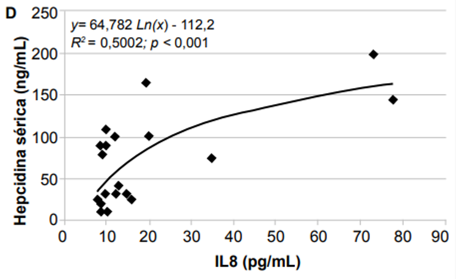
Correción entre hepcidina sérica (ng/mL) e IL-8 (datos propios).
Figure 20
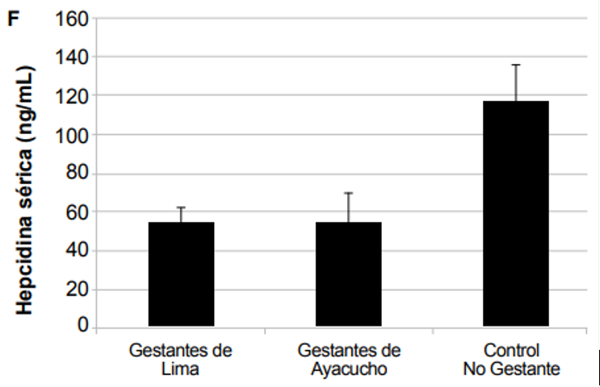
Nivel de hepcidina sérica en no gestantes y en gestantes de nivel del mar y de la altura (datos propios), Los valores obtenidos en el segundo trimestre de 50 gestantes de nivel del mar y 50 gestantes de la altura. Los niveles de hepcidina fueron medidos usando un kit de ELISA Hepcidin 25 Bioactive (DRG Instruemntal GmBH. Marburg, Alemania).
Especialistas de la Universidad Peruana Cayetano Heredia (UPCH) indican que se podrían estar contando a niños que no sufren de anemia dentro de las estadísticas, y recomiendan mejorar el diagnóstico para la detección de anemia, pues la deficiencia de hierro no es la única causa.
El año pasado, la Encuesta Demográfica y de Salud Familiar (Endes 2017) arrojó que el 43,6% de los niños menores de 3 años tenía anemia. En la medición del primer semestre de este año, el mismo indicador se elevó hasta 46,6%.
De acuerdo con un trabajo del Instituto de Investigaciones de la Altura, de la UPCH, ejecutado junto a especialistas de la Universidad Nacional del Altiplano de Puno, esa cifra podría estar “sobredimensionada”, es decir, podría estar contando como anémicos a niños que en realidad no sufren de ese mal.
Para entender esa conclusión se deben tener presente varios elementos. En principio, según la Organización Mundial de la Salud (OMS), la anemia en mujeres embarazadas y en niños de hasta 59 meses (5 años) se diagnostica cuando la concentración de hemoglobina en la sangre es menor a 11 gramos, pues en ella se acumula el 70% del hierro del organismo.
La deficiencia de hierro, sin embargo, no es la única causa de anemia como hemos visto anteriormente, ni el corte de 11 gramos de hemoglobina es el adecuado para todos los escenarios, según reconoce la propia OMS. Es por ello que para las poblaciones que residen en zonas de mucha altura se aplica un “factor de corrección”.
Esta corrección se basa en la suposición de que las poblaciones que viven en altura aumentan la hemoglobina a medida que aumenta la altitud, se lee en la investigación.
Figure 21
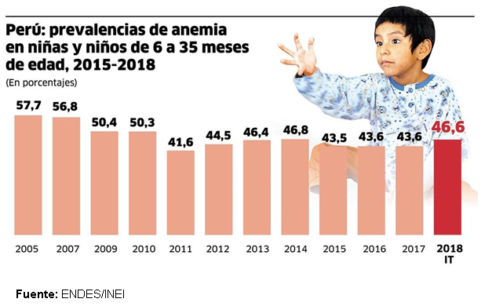
La desconfianza en los servicios de salud es creciente, puede existir legítimas razones para ello: el crónico abandono de los trabajadores de salud de parte del estado ocasiona desmotivación, la falta de reconocimiento a la dura labor cotidiana, la vigencia de un modelo de atención que se encuentra de espaldas a la población y sus necesidades cotidianas de salud, etc. Esta situación conduce a la perdida de legitimidad ante los ojos de la población. Aquí juega un rol capital la participación del médico, en los establecimientos de salud que disponen de él. [50]
Figure 22
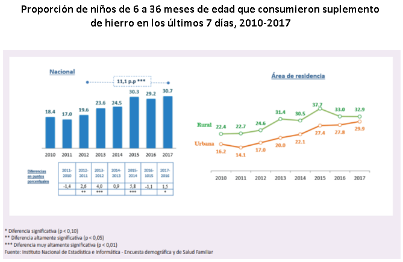
La desinformación se ve reflejada en las evaluaciones de impacto de los programas nutricionales, ya que nos permiten determinar el efecto directo de la intervención sobre la población objetivo [51]. Las razones por las cuales un programa no llega a tener impacto pueden ser: Fallas de implementación: cuando el programa, por diversos motivos, no brinda el producto/ servicio según las reglas de operación, afectando la entrega en calidad y a futuro el impacto de la intervención [52]. Por ejemplo, existe evidencia suficiente sobre la eficacia del uso de los micronutrientes en polvo (MNP) contra la anemia, por lo que la falta de impacto en Perú se debería a fallas en la implementación, tal como lo describen algunos estudios en Perú [53-55]. Las evaluaciones del uso de MNP en contextos programáticos en otros países también evidencian poca efectividad por fallas en la implementación [56], pues muestran dificultades y retos en la cobertura, en el uso apropiado, en la adherencia del MNP y manifiestan solo un impacto biológico modesto. [57]
Otro caso de desinformación durante los últimos años está en el trabajo extramuros, ya que han sufrido un progresivo deterioro, tanto en la cobertura, como en la calidad e integralidad de las intervenciones. La administración del suplemento de hierro debe ser diaria y en el hogar, esto requiere la plena decisión del cuidador de administrarlo. Igualmente, es clave el consumo de alimentos ricos en hierro en la alimentación diaria del niño o la madre gestante. Esto exige tanto educación alimentaria como consejería que promueva la incorporación de prácticas nutricionales positivas. [58]
Figure 23
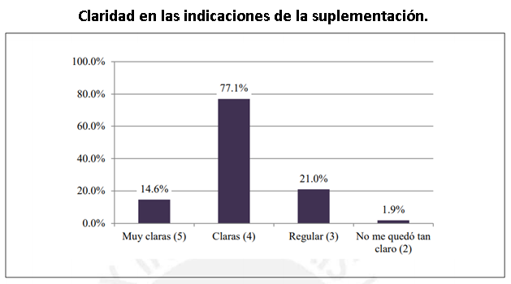
La anemia al ser un problema de salud pública que afecta el desarrollo integral y el ejercicio de los derechos de las niñas y niños, ha provocado una toma de medidas para la prevención de esta, tomando como base el intervencionismo para lograr resultados a corto y largo alcance
Para poder iniciar las intervenciones directas y transversales se deben tener presente tres grupos poblacionales clave: mujeres en edad fértil, madres gestantes, y niños menores de 36 meses de edad, con prioridad en niños menores de 12 meses.
Las intervenciones identificadas, en su mayoría, forman parte de siete programas presupuestales que contribuyen con la prevención y reducción de la anemia: (1) Acceso de la Población a la Identidad, (2) Programa Articulado Nutricional, (3) Salud Materno Neonatal, (4) Programa Nacional de Apoyo Directo a los más Pobres JUNTOS, (5) Programa Nacional Cuna Más, (6) Programa Nacional de Saneamiento Rural, y (7) Programa Nacional de Saneamiento Urbano, Atención oportuna de niñas, niños y adolescentes en presunto estado de abandono
Los objetivos al realizar estos programas son los siguientes:
Figure 24
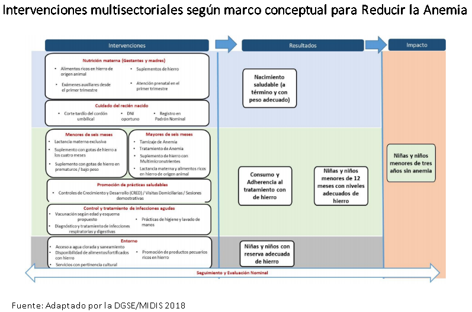
Considerando que el grupo más afectado por la anemia son las niñas y niños de 6 a 11 meses de edad, representando alrededor del 59,6%. Priorizar las intervenciones en este grupo nos abrirá una “ventana de oportunidad” para enfrentar la anemia. Se necesita asegurar la captación temprana de gestantes y niños menores de un año de edad, con la finalidad de implementar intervenciones tempranas de prevención y tratamiento de la anemia [Figure 22]. A continuación, se describen las intervenciones que se desarrollarán durante la “ventana de oportunidad”:
Figure 25
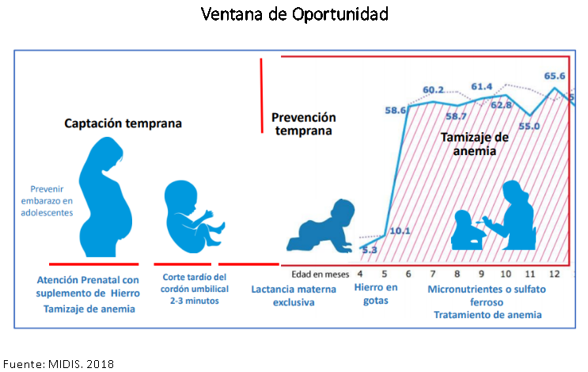
El ciclo de vida ofrece un marco de referencia para fortalecer la buena nutrición en etapas más vulnerables biológicamente. La buena nutrición constituye un resultado, así como también un insumo determinante para el desarrollo social y económico de la población.
El Plan Nacional reconoce que los alimentos y la preparación de la comida son parte de la cultura y la salud familiar y comunal, sustentadas en los patrones de producción y consumo sostenibles, rescatando las tradiciones alimentarias.
Figure 26
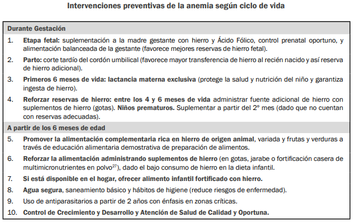
Las actividades estratégicas del Plan Nacional reconocerán las diferencias culturales de cada ámbito, buscando el cierre de brechas para reducir las desigualdades existentes, con énfasis en la población indígena.
Las evidencias señalan que cuando las intervenciones para mejorar la alimentación, la salud y el cuidado concurren en los mismos individuos, en los mismos hogares y en la misma comunidad pueden obtenerse mayores logros en reducción de la desnutrición, comparados con acciones aisladas o desarticuladas.
El Plan Nacional toma en cuenta principalmente dos de estos programas presupuestales: el Programa Articulado Nutricional y Salud Materno para abordar la solución a los problemas de anemia y desnutrición crónica infantil en el país. Para ello prioriza quince intervenciones para reducir y controlar la anemia materno infantil y la desnutrición crónica infantil, que se presentan a continuación en función de los objetivos específicos del Plan Nacional.
Figure 27
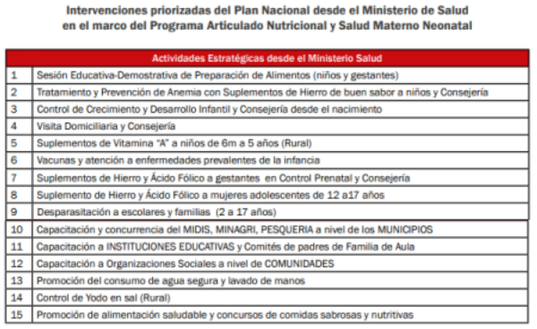
Figure 28
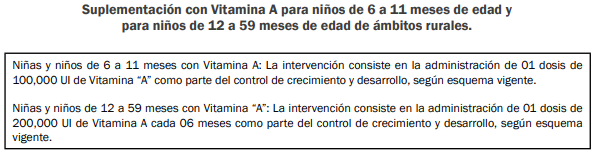
Figure 29
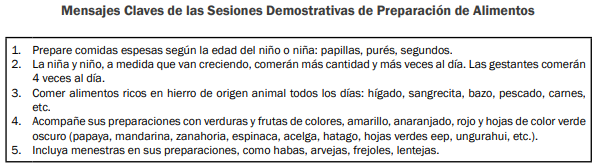
Figure 30
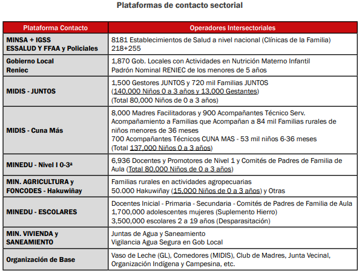
Desde el 2014, el Ejecutivo, a través del Ministerio de Salud (Minsa) y el Ministerio de Desarrollo e Inclusión Social (Midis), emprendió la distribución universal de los micronutrientes para la prevención de la anemia en niñas y niños de 6 a 35 meses de edad como una de las líneas de acción prioritarias en el marco del Plan Nacional para la Reducción de la Desnutrición Crónica Infantil y la Prevención de la Anemia.
Los micronutrientes, conocidos también como 'chispitas, son complementos nutritivos que contienen pequeñas cantidades de hierro, zinc, vitamina A, vitamina C y ácido fólico, que ayudan al organismo de los menores para prevenir la anemia.
Estos micronutrientes vienen en sobrecitos de 1 gramo en polvo que son distribuidos en los centros de salud públicos.
El personal de salud está en la obligación de, luego de hacer el chequeo respectivo a los menores de 36 meses, entregar a los padres 30 sobres de micronutrientes cada mes.
El Instituto Nacional de Salud (INS), entidad del Ministerio de Salud (MINSA), indicó que se fortificará el arroz en el país como una estrategia para prevenir la anemia y desnutrición crónica, especialmente en los niños menores de cinco años y en las mujeres en edad fértil.
La fórmula de arroz fortificado elaborada por el Centro Nacional de Alimentación y Nutrición (CENAN) del Instituto Nacional de Salud (INS) contiene diez micronutrientes ellos la vitamina A, B1, B3, B6, B12, D, E, ácido fólico, hierro y zinc.
El arroz fortificado forma parte del Plan Nacional para la Reducción de la Anemia Materno Infantil y la Desnutrición Crónica Infantil 2017, y en el Plan Multisectorial de Lucha contra la Anemia.
La mejora de este producto, según explicó la máxima autoridad del INS, Hans Vásquez, reducirá la anemia y mejorará los niveles de hierro en los niños menores de cinco años, sin cambiar sus hábitos de alimentación ni causándole daños a la salud.
El INS aseguró que en las fichas aprobadas se consideran tres tipos de arroz: Arroz fortificado grado extra, arroz fortificado grado superior y arroz fortificado grado corriente. Todas con micronutrientes.
Según la norma del Ministerio de Salud, el Instituto Nacional de Salud, a través del Centro de Alimentación y Nutrición (CENAN), será el órgano responsable de vigilar la calidad del arroz fortificado y que contenga los micronutrientes que están establecidos en la ficha de homologación.
Cuando la ONG internacional Acción Contra el Hambre implementó un programa contra la anemia en la zona de Yanapampa, en los Andes Peruanos, descubrió que algunas familias salaban y deshidrataban las vísceras para que durasen más
Mediante la promoción de estos alimentos ricos en hierro, el programa “Anemia No” de Acción Contra el Hambre, que recientemente fue reconocido con el premio a la mejor iniciativa en promoción por la salud de la Fundación Mapfre, ha contribuido a que se reduzcan notablemente los niveles de esta condición de los niños de las 19 comunidades del departamento de Ayacucho (en el sur andino de Perú) en las que intervino.
La promoción del charqui de sangrecita y de vísceras en coordinación con otros programas que fomentan hábitos como el lavado de manos, la estimulación temprana o cocinas más saludables (sin animales de corral, con extractores de humo…) han logrado reducir el índice de anemia.
Además, el charqui de sangrecita ha logrado superar algunos de los problemas que tienen las Chispitas que reparte el gobierno en sobres con dosis diarias.
Una propuesta educativa innovadora y sostenible que promueva el consumo de alimentos ricos en hierro de bajo costo, y que es útil en el diseño de estrategias para prevenir y reducir la anemia en el país.
Saby Mauricio Alza, decana del Colegio de Nutricionistas del Perú, dijo que la iniciativa “Anemia no Va”, tiene como propósito contribuir con las propuestas efectivas que serán alcanzadas al gobierno central y colaborar de esta manera con la meta al 2021.
“’Anemia No Va’ es liderada por el Colegio de Nutricionistas del Perú, que implementa en un trabajo conjunto con la empresa privada, cuyo objetivo es contribuir en la mejora de prácticas de alimentación en las madres o cuidadores de niños menores de 36 meses y gestantes, a través de la educación nutricional para el consumo de alimentos nutritivos con alto contenido de hierro hemínico. Este programa aborda una de las causas de la anemia que está relacionada a la baja ingesta y frecuencia de hierro en la dieta”, comentó Mauricio Alza.
El Ministerio de Salud (MINSA) lanzó el aplicativo móvil “App de Lucha y Movilización contra la Anemia (ALMA)” para brindar a los padres de familia información personalizada sobre cada uno de sus hijos menores de 36 meses a fin de prevenir y controlar esta enfermedad.
“Esta aplicación móvil permitirá a los padres de familia hacer el seguimiento de las fechas clave para el control de crecimiento de sus hijos, práctica de la lactancia materna, el control de vacunas, el inicio de consumo de gotitas de hierro, el descarte de anemia, el inicio de las comidas, entrega de micronutrientes, así como el tratamiento y control de la anemia y fechas de sus controles de hemoglobina”, manifestó la ministra de Salud, Silvia Pessah.
La aplicación ALMA también ofrece una variedad de recetas para preparar potajes con alimentos ricos en hierro de procedencia animal con el objetivo de prevenir la anemia. Inicialmente tendrá una versión en español y luego se hará en quechua.
Una vez instalada la app en el dispositivo móvil, el usuario deberá registrar la fecha de nacimiento y el sexo de sus hijos para recibir los mensajes personalizados por cada uno de ellos.
Al igual que en el Perú, un Hemograma es la forma más usada para el diagnóstico de anemia. Sin embargo, a este se le adiciona algunos exámenes complementarios que ayudan a brindar información sobre el tipo de anemia, su gravedad y la forma en la que se pierde glóbulos rojos [68]. Dichos exámenes son:
En cuanto a los tratamientos para la desnutrición y Anemia Ferropénica, se encuentra la sopa de Jaramillo, el cual, lleva siendo exitoso en países como Estados Unidos y Colombia.
En la ciudad de Armenia, de 19.881 consultas, el 63,58% de ellas fueron por morbilidad debida a la desnutrición .Con este programa se ha logrado bajar el índice de la desnutrición en el grupo de niños de 0 a 5 años del municipio de Calarcá a la envidiable cifra de 0,05%. [69]
Por otro lado, existen patentes que a futuro, en cuanto a la anemia Ferropénica, se planea que se pongan en práctica. Algunas de estas son:
La presente invención se refiere a un analizador de sangre, a un método de respaldo diagnóstico y a un programa informático para respaldar el diagnóstico de anemia usando una muestra de medición preparada a partir de sangre. Cuenta con una unidad de luz fluorescente y un procesador de información que respaldan su análisis y funcionamiento.
Es un sistema para la administración transdérmica iontoforética de una cantidad terapéuticamente eficaz de hierro para el tratamiento de la deficiencia de hierro. Funciona a través de una punta con electrodos, los cuales mediante un parche determinan una cantidad necesaria de hierro para el paciente.